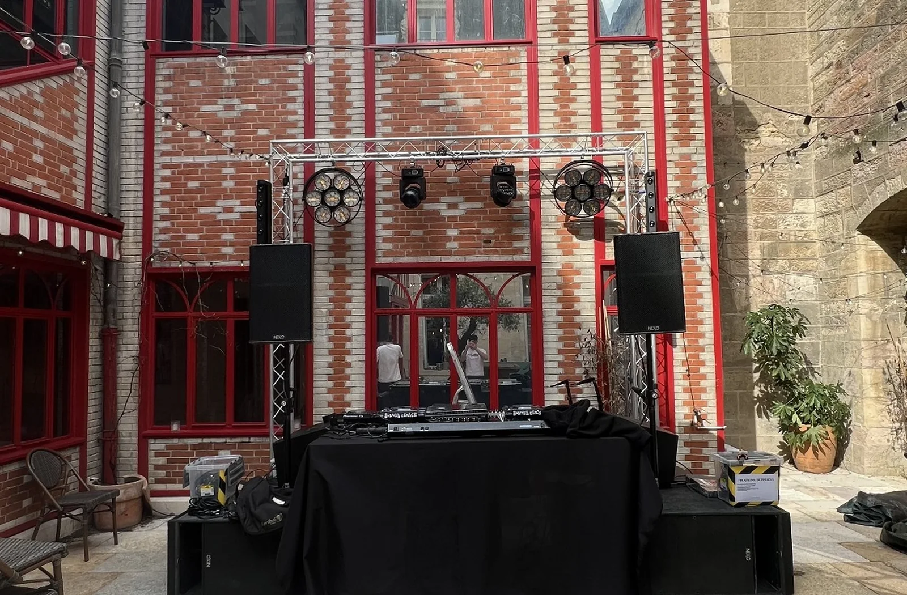
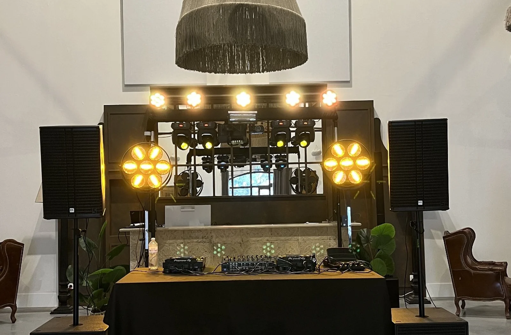
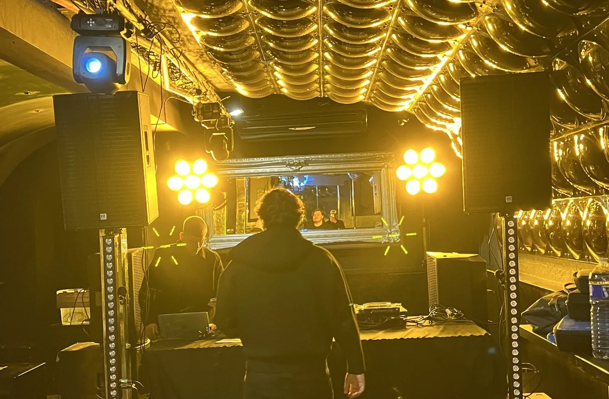
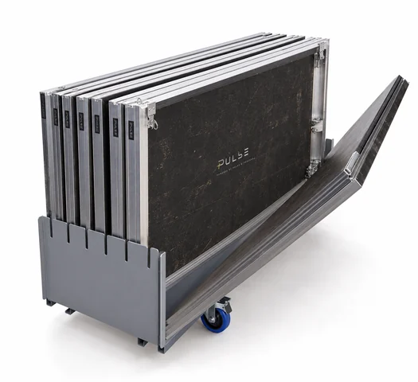
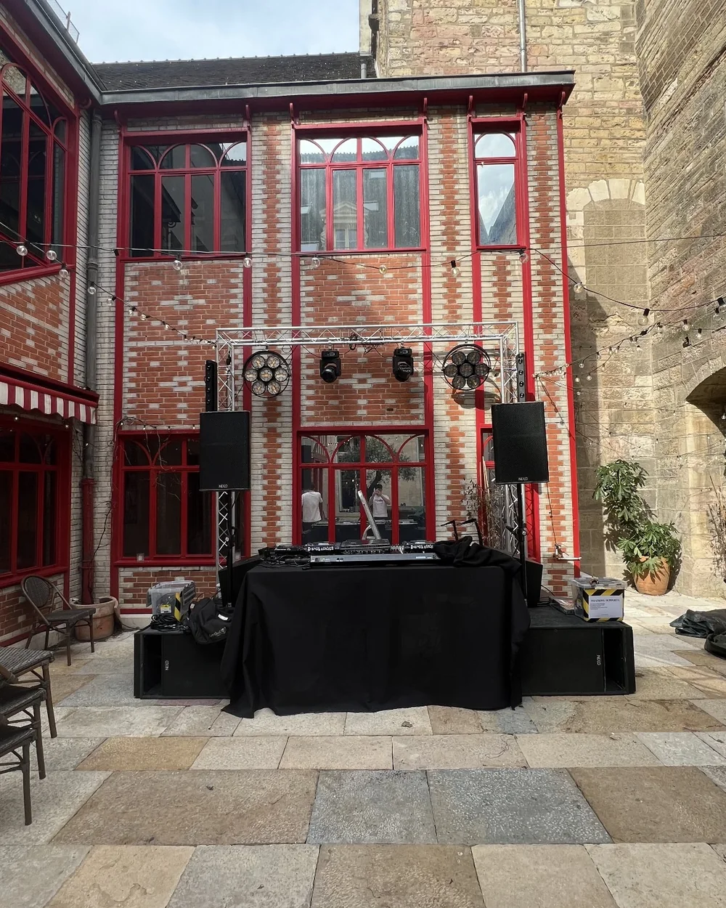
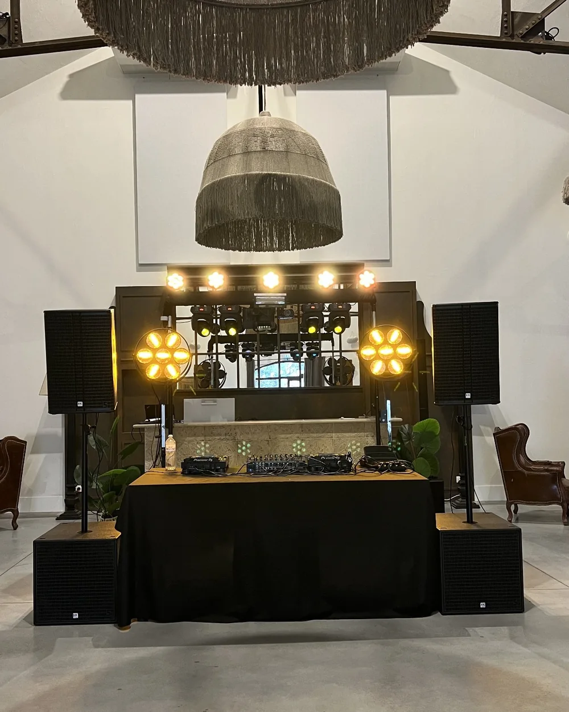
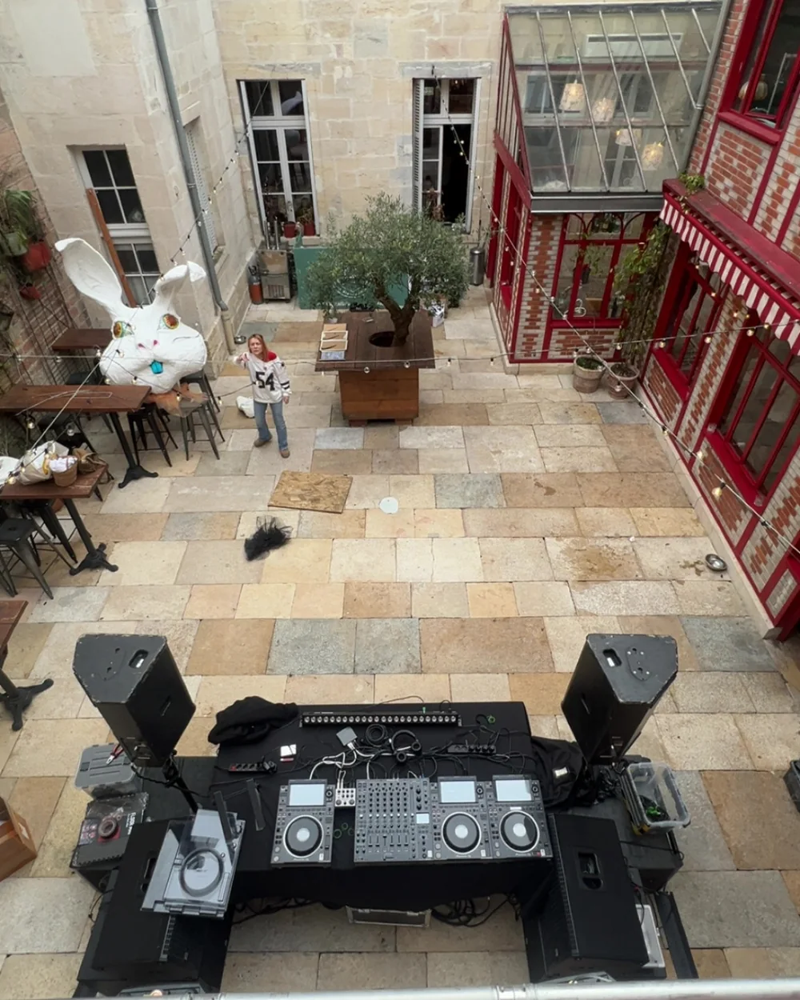
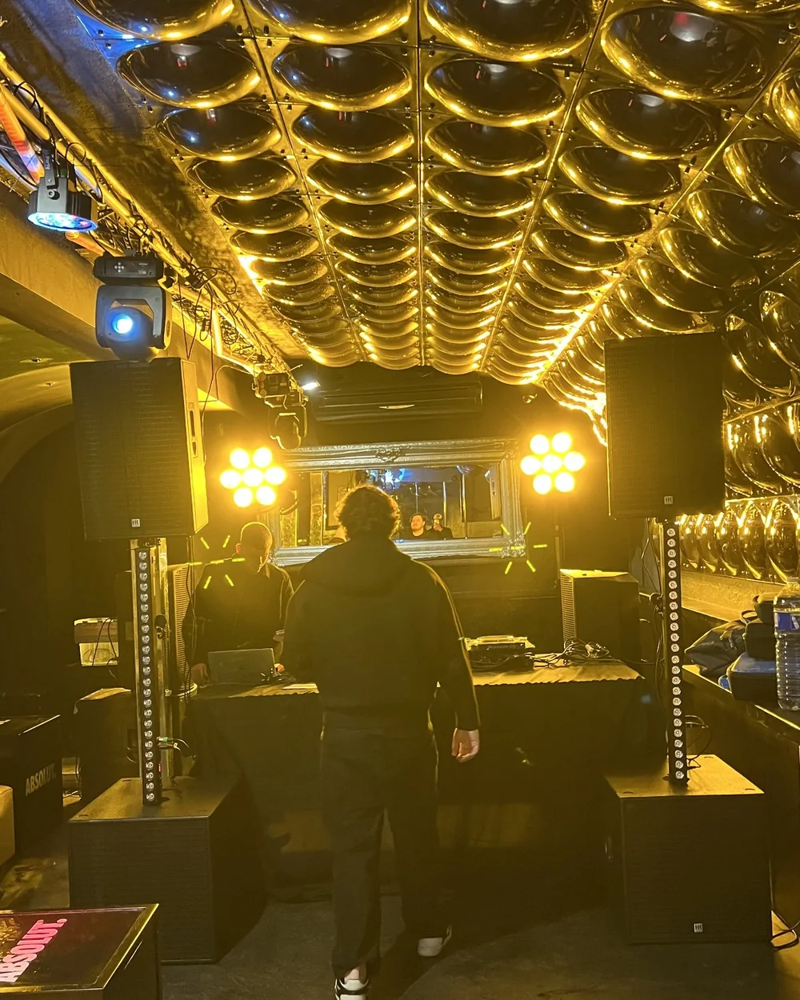

Sonorisation
Packs son
Configurations compactes, HK Audio et L-Acoustics selon le nombre de personnes et le lieu.
Voir les packsSonorisation, lumières, praticables, livraison, installation, câblage et reprise du matériel pour vos événements autour de Dijon.

Le site présente uniquement les offres Pulse. Les tarifs des packs son reprennent le catalogue, sans mélange entre les photos et les configurations.

Configurations compactes, HK Audio et L-Acoustics selon le nombre de personnes et le lieu.
Voir les packs
Pont lumière, lyres, effets, laser, fumée et mise en ambiance.
Voir les lumières
Modules scène, pieds, escalier, câblage et matériel complémentaire.
Voir les extrasLa galerie présente des installations, régies et ambiances issues de prestations ou de montages réels. Les légendes restent volontairement simples.




Indiquez la date, le lieu, le nombre de personnes et le type d’événement. Le retour se fait avec une configuration adaptée.